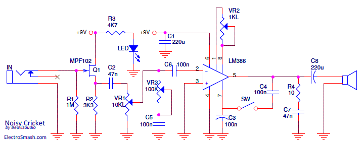
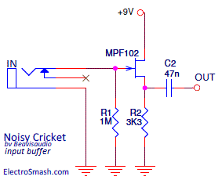
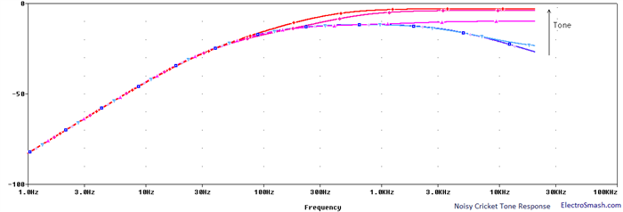
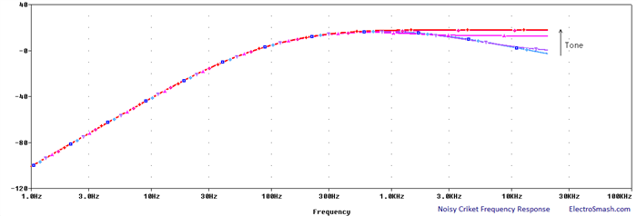
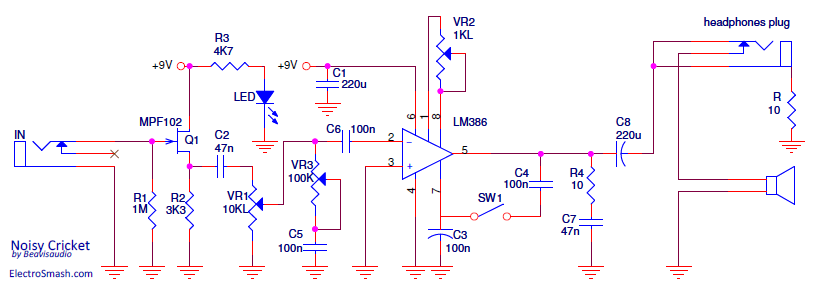

The Noisy Cricket by BeavisAudioResearch is a 1/2W guitar amplifier based on JRC/LM386 chip. It is an evolution of the Ruby Amp by Runoffgroove, keeping the circuit core idea and introducing new features like a tone control and an overdrive boost switch.
Table of Contents
1. Noisy Cricket Schematic Diagram.
1.1 Input Buffer.
1.2 Voltage Gain.
1.3 Tone/Volume Circuit.
1.4 Grit Mod.
1.5 Stabilization Techniques.
2. Frequency Response.
3. Mods - Headphones Plug.
4. Resources.
1. Noisy Cricket Schematic Diagram.
The Noisy Cricket circuit keeps the basic configuration of the previous Ruby Amp:
- A similar Jack Orman Input Buffer.
- Same Gain setting (VR2), Zobel network(R4, C7), Output Cap (C8) and Stabilization Techniques.
The improvements by BeavisAudioResearch are the boost switch also called "Grit mod" (SW) and a new tone circuit (VR3, C5). 
Noisy Cricket Bill of Materials / Parts List
R1 - 1M
R2 - 3K3
R3 - 4K7
R4 - 10Ω
C1 - 220uF electrolytic.
C2 - 47nF poly film.
C3 - 100nF poly film.
C4 - 100nF poly film.
C5 - 100nF poly film.
C6 - 100nF poly film.
C7 - 47nF poly film
C8 - 220uF electrolytic.
SW1 - SPST toggle.
VR1 - 10K Linear.
VR2 - 100K Linear.
VR3 - 1K Linear.
Q1 - MPF102
LM386
1.1 Noisy Cricket Input Buffer
The Input Buffer is a unity gain JFET common drain transistor amplifier, inspired by Jack Orman designs. 
It prevents loading by presenting a high input impedance, avoiding tone-sucking (degraded high harmonics).
- The input impedance of the Noisy Cricket is determined by the value of R1, so it is 1M. The value of R2 is not too critical and may be any value from 3.3k to 10k without much change in the tone. It is better to use lower values since this allows more drive on the negative portion of the audio cycle where the only pull-down is the source resistor.
- The output impedance of the buffer will depend on the Jfet but is on the order of a few hundred ohms.
1.2 Noisy Cricket Gain Circuit
The 1K logarithmic potentiometer (VR2) is placed between pins 1 and 8 to adjust the voltage gain from 41 (28dB) to 200 (46db), similar to the Ruby Amp. The Gain is calculated following the general LM386 formula:
Where Z1-5 and Z1-8 are the impedances between the respective pins. Note that Z1-5 internal resistance is 15K and Z1-8 is 1.35K.
1.3 Noisy Cricket Tone/Volume Circuit.
The new Tone control placed between the Volume pot and the LM386 is the main contribution to the original Ruby Schematic.
It is a new idea because in the past all LM386 based circuits tone mods ( like Bassman or Hiwatt ) tried to shape the frequency response using a high-pass filter: emphasizing the treble and removing the bass.
Noisy Cricket Tone control introduces a passive low-pass filter that will wipe out treble harmonics and preserve the bass.

As you can see in the above graph, the goal of the tone control is to provide compensatory sonic adjustment, rather than a tonal overhaul. The advantage of this one knob tone circuit is its simplicity but there are also some cons:
- The volume & tone pots are slightly interactive.
- The response of the circuit is limited to some values of the tone pot, meaning that only some range of the tone pot will produce a change in frequency response: "I have the tone pot in mine and in fact it does very little for most of the pots' rotation then at the end some of the upper frequencies are attenuated [...]" by captntasty in DIYstompboxes.
1.4 Noisy Cricket Grit Mod.
The Grit Mod is the switch from pins 5 to 7 in the LM386. It drives the circuit a little harder, giving it a little extra edge/breakup.
The pin 7 in LM386 sets the DC idle output voltage to half the power supply. This voltage reference point must be as stable as possible, that is the reason why the cap C3 is placed from pin 7 to ground: to remove the hum/noise from the Power supply line.
With the switch on, there is a feedback loop between the output (pin 5) and the DC voltage reference (pin 7), this point will be affected by the audible output signal, sagging the DC point and there will be some buzz on the voltage reference. Any distortion or trembling feedbacked signal in pin 7 will be added to the input signal an amplified giving a subtle distortion or extra break. If you want to learn more about this part, check the LM386 Internal Circuit Analysis.
1.5 Noisy Cricket Stabilization Techniques.
Following the LM386 application notes, some measures should be taken to increase the stability and prevent signal degradation:
- Cap on pin 7: Like the Ruby Amp, the Noisy Cricket includes a 100nF C3 capacitor from pin 7 to ground in the 386 IC. It is used to avoid the power supply noise to be amplified and reach the output. In this way, the high-gain input stage of the chip is isolated from the supply noise hum, transients, etc.
- Power Supply Cap: The supply pin 6 is bypassed to ground with a 220uF C1 capacitor to avoid oscillation. It should be placed as close to the chip as possible.
- Zobel Network: Placed from the 386 output to ground in order to stabilize the amp and restore the clean tones wiping some spurs. The RC network is a compensating circuit for the load (speaker), not for the amplifier. It is formed by a generic 10Ω R4 resistor and a 47nF C7 cap. For more info, check the similar design used in the Little Gem Amp.
2. Noisy Cricket Frequency Response.
The frequency response is tailored by the Bass Cut filter formed by the output cap C8 and the load (speaker) and the filters of the Volume/Tone circuit previously seen:

The Tone/Volume circuit together with the bass-cut filter (C8) create a subtle mid-hump which means that the circuit accentuates frequencies between the bass and treble ranges (mid-frequencies). A lot of well know overdrive pedals also use this mid-hump equalization around 1KHz to keep the guitar sound from getting lost in the overall mix of the band (TubeScreamer mid-hump is around 720Hz).
This frequency response is also very interesting if you are intended to drive a small speaker because they have a better behaviour when reproducing a small range of frequencies. The low amount of bass keeps the speaker away from farting out and the smooth treble makes the tone less shrill.
3. Noisy Cricket Mods.
Output Headphone Plug: The solution is similar to the RunoffGroove Ruby Headphone Mod, to place an auxiliary output headphone plug wired as in the image: 
The resistor R is used to attenuate the output level, otherwise, it will be too loud. The reference value for this resistor is 10Ω but it can be adjusted to meet the user taste and headphones sensibility. This resistor is placed from the sleeve of the connector to ground. It is important to use isolating washers for this jack or use a plastic jack to avoid shortcutting the R between two grounds.
Should be mentioned that using a different load (headphones instead of the of 8ohm speaker), the cut-off frequency of the bass cut filter formed by C8 and the load will be slightly shifted down, depending on the headphones impedance + resistor (R) combination. However, this change is about some inappreciable tens of hertz.
4. Resources.
Noisy Cricket by BeavisAudioResearch.
Adam's Amplifiers Tone Stacks.
Guitar Tone Circuit Analysis.
Inception thread of Noisy Cricket in DIYstompboxes.
Teemuk Kyttala Solid State Guitar Amplifiers, the Holy Scripture.
Thanks for reading, all feedback is appreciated


{kind=link}
{kind=link}
{kind=link}
{kind=link}